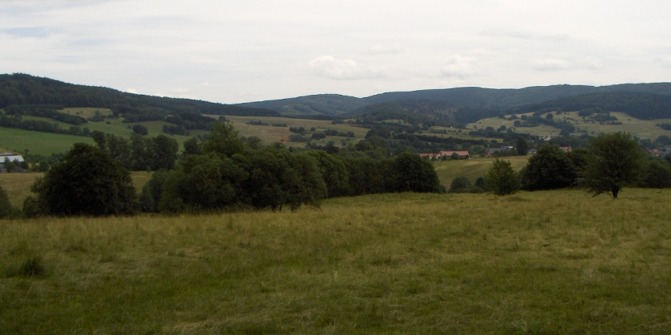
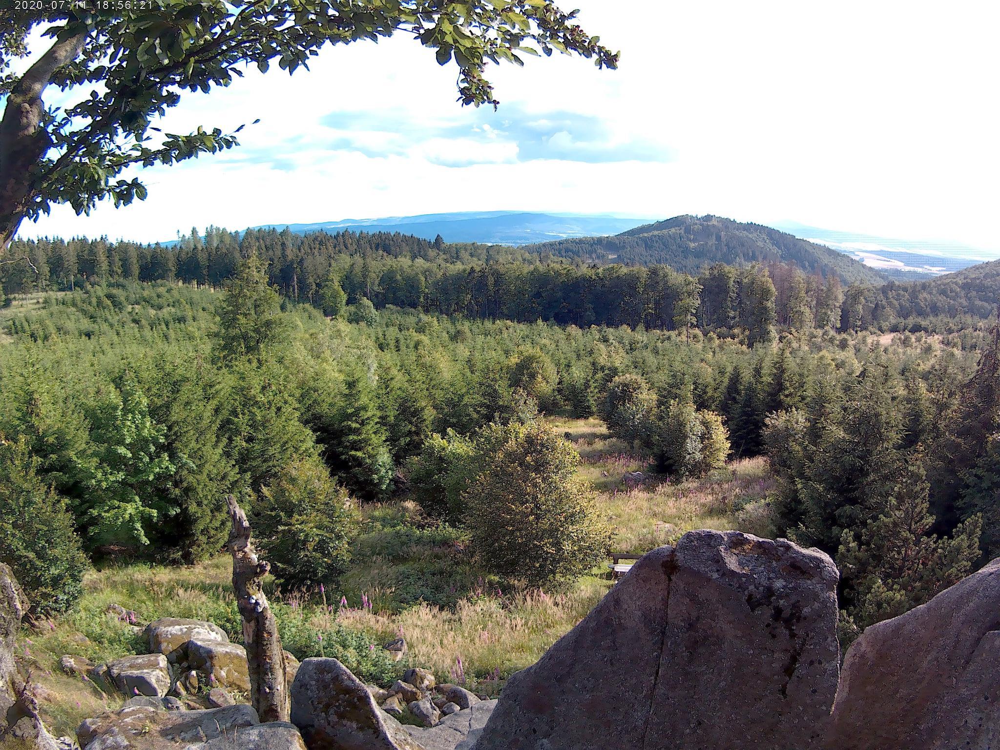
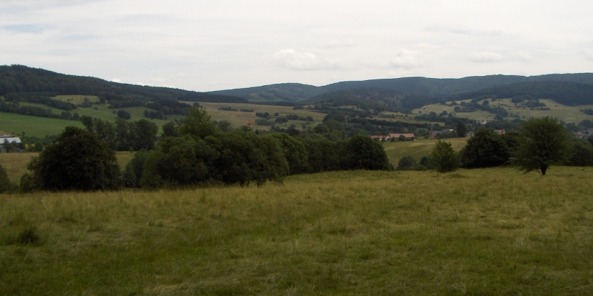
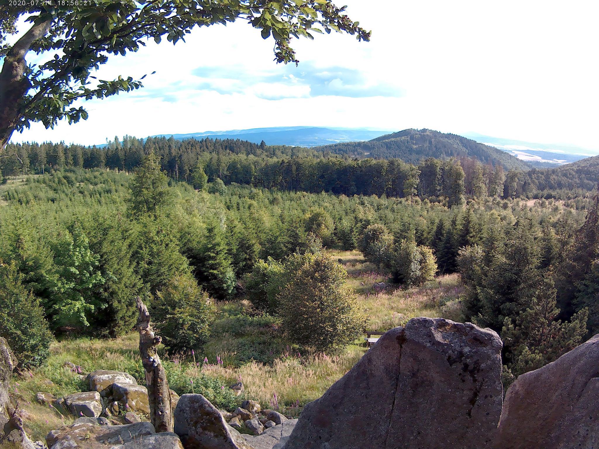

Name
Rennsteig - Thüringer Wald
Länge
169,8 km
Dauer
40 Stunden
Schwierigkeit
Mittel
Beschreibung
Der Rennsteig im Thüringer Wald bietet uns viele historische und kulturelle Sehenswürdigkeiten. Er führt auf 169 km von Hörschel bei Eisenach bis nach Blankenstein im nördlichen Frankenwald. Dabei erleben wir auf dem Kammweg die Naturschönheiten des Mittelgebirges. Der Rennsteig besteht bereits seit dem Mittelalter und markierte damals die Grenze des Herzogtums Franken zur Landgrafschaft Thüringen. Noch heute finden wir entlang des Rennsteiges historische Grenzsteine, mit denen der Grenzweg seit dem 16. Jahrhundert markiert wurde. Auf dem Wanderweg, der vom Deutschen Wanderverband mit dem Premiumsiegel „Wanderbares Deutschland“ ausgezeichnet wurde, erleben wir traumhafte Blicke auf die Wartburg, unberührte Natur und steile Anstiege, zum Beispiel auf den Beerberg, mit spektakulärer Aussicht.
 


